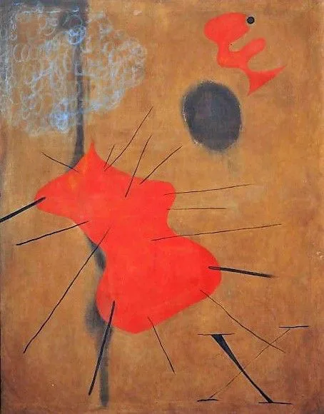

„În 1910, Kandisky, privind întâmplător o lucrare răsturnată în care nu a recunoscut elementele figurative, descoperă că există şi alte posibilităţi de exprimare într-un limbaj nou, muzical."
Wassily Kandinsky - Rain LandscapeWassily Kandinsky - Untitled (First Abstract Watercolor) Helen Frankenthaler - Mountains and SeaPaul Klee - Senecio (Head of a Man)Paul Klee - Hardy Plants Ben Nicholson - 1936 (White Relief)

Joan Miro - La Mancha RojaPiet Mondrian - Tableau I Mark Rothco - No 2 Blue Red GreenWillem de Kooning - InterchangeGeorgia O’Keeffe - Black IrisWassily Kandinsky - Composition XJoan Miro - Peinture (Etoile Bleue)